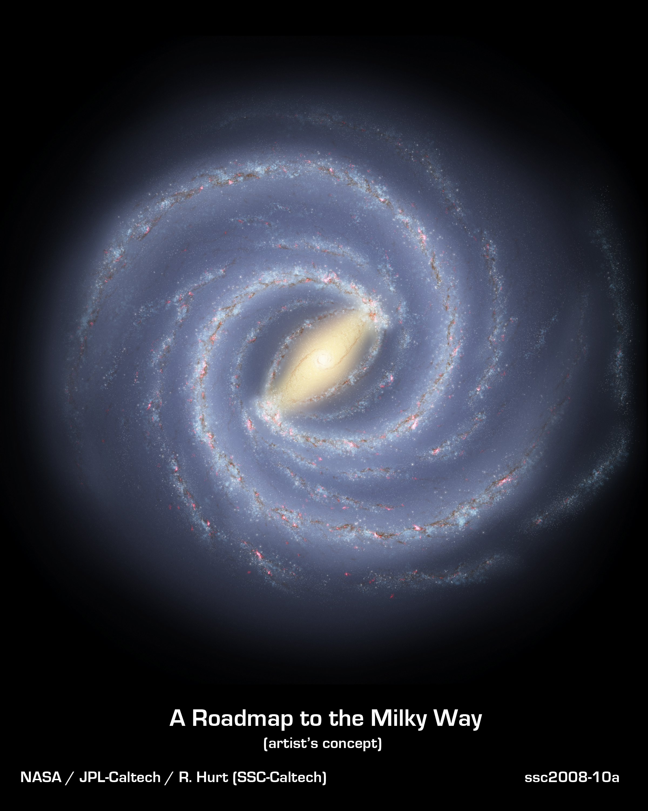

Galaksi Bima Sakti
Sumber: NASA/JPL-Caltech/R. Hurt (SSC/Caltech)
Diterbitkan: November 8, 2017
Seperti penjelajah awal yang memetakan benua-benua di dunia kita, para astronom sibuk memetakan struktur spiral galaksi kita, Bima Sakti. Menggunakan gambar inframerah dari Teleskop Luar Angkasa Spitzer NASA, para ilmuwan telah menemukan bahwa struktur spiral Elegan Bima Sakti didominasi oleh hanya dua lengan yang membungkus ujung bar pusat bintang. Sebelumnya, galaksi kita diperkirakan memiliki empat lengan utama.
Konsep seniman beranotasi menggambarkan pandangan baru Bima Sakti. Dua lengan utama galaksi (Scutum-Centaurus dan Perseus) dapat dilihat melekat pada ujung bar tengah yang tebal, sementara dua lengan kecil yang sekarang diturunkan (Norma dan Sagitarius) kurang berbeda dan terletak di antara lengan utama.

Lengan utama terdiri dari kepadatan tertinggi bintang muda dan tua; lengan kecil terutama diisi dengan gas dan kantong aktivitas pembentukan bintang.
Konsep seniman juga mencakup lengan spiral baru, yang disebut "Lengan kiloparsec jauh-3," ditemukan melalui survei radio-teleskop gas di Bima Sakti. Lengan ini lebih pendek dari dua lengan utama dan terletak di sepanjang batang galaksi.
Matahari kita terletak di dekat lengan kecil parsial yang disebut Lengan Orion, atau Orion Spur, yang terletak di antara lengan Sagitarius dan Perseus.